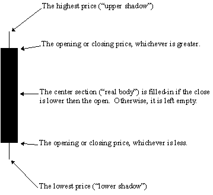

Candlesticks, Japanese
Overview
In the 1600s, the Japanese developed a method of technical analysis to analyze the price of rice contracts. This technique is called candlestick charting. Steven Nison is credited with popularizing candlestick charting and has become recognized as the leading expert on their interpretation.
Candlestick charts display the open, high, low, and closing prices in a format similar to a modern-day bar-chart, but in a manner that extenuates the relationship between the opening and closing prices. Candlestick charts are simply a new way of looking at prices, they don't involve any calculations.
Each candlestick represents one period (e.g., day) of data. Figure 45 displays the elements of a candle.
Figure 45
Interpretation
I have met investors who are attracted to candlestick charts by their mystique--maybe they are the "long forgotten Asian secret" to investment analysis. Other investors are turned-off by this mystique--they are only charts, right? Regardless of your feelings about the heritage of candlestick charting, I strongly encourage you to explore their use. Candlestick charts dramatically illustrate changes in the underlying supply/demand lines.
Because candlesticks display the relationship between the open, high, low, and closing prices, they cannot be displayed on securities that only have closing prices, nor were they intended to be displayed on securities that lack opening prices. If you want to display a candlestick chart on a security that does not have opening prices, I suggest that you use the previous day's closing prices in place of opening prices. This technique can create candlestick lines and patterns that are unusual, but valid.
The interpretation of candlestick charts is based primarily on patterns. The most popular patterns are explained below.
| Bullish Patterns | |
| Long white (empty) line. This is a bullish line. It occurs when prices open near the low and close significantly higher near the period's high. | |
| Hammer. This is a bullish line if it occurs after a significant downtrend. If the line occurs after a significant up-trend, it is called a Hanging Man. A Hammer is identified by a small real body (i.e., a small range between the open and closing prices) and a long lower shadow (i.e., the low is significantly lower than the open, high, and close). The body can be empty or filled-in. | |
|
Piercing line. This is a bullish pattern and the opposite of a darkcloudcover. The first line is a longblackline and the second line is a longwhiteline. The second line opens lower than the first line's low, but it closes more than halfway above the first line's real body. |
|
Bullish engulfing lines. This pattern is strongly bullish if it occurs after a significant downtrend (i.e., it acts as a reversal pattern). It occurs when a small bearish (filled-in) line is engulfed by a large bullish (empty) line. |
| Morning star. This is a bullish pattern signifying a potential bottom. The star indicates a possible reversal and the bullish (empty) line confirms this. The star can be empty or filled-in. | |
|
Bullish doji star. A star indicates a reversal and a doji indicates indecision. Thus, this pattern usually indicates a reversal following an indecisive period. You should wait for a confirmation (e.g., as in the morning star, above) before trading a doji star. The first line can be empty or filled in. |


| Bearish Patterns | |
|
Long black (filled-in) line. This is a bearish line. It occurs when prices open near the high and close significantly lower near the period's low. |
| Hanging Man. These lines are bearish if they occur after a significant uptrend. If this pattern occurs after a significant downtrend, it is called a hammer. They are identified by small real bodies (i.e., a small range between the open and closing prices) and a long lower shadow (i.e., the low was significantly lower than the open, high, and close). The bodies can be empty or filled-in. | |
| Dark cloud cover. This is a bearish pattern. The pattern is more significant if the second line's body is below the center of the previous line's body (as illustrated). | |
| Bearish engulfing lines. This pattern is strongly bearish if it occurs after a significant up-trend (i.e., it acts as a reversal pattern). It occurs when a small bullish (empty) line is engulfed by a large bearish (filled-in) line. | |
| Evening star. This is a bearish pattern signifying a potential top. The star indicates a possible reversal and the bearish (filled-in) line confirms this. The star can be empty or filled-in. | |
|
Doji star. A star indicates a reversal and a doji indicates indecision. Thus, this pattern usually indicates a reversal following an indecisive period. You should wait for a confirmation (e.g., as in the evening star illustration) before trading a doji star. |
| Shooting star. This pattern suggests a minor reversal when it appears after a rally. The star's body must appear near the low price and the line should have a long upper shadow. | |


| Reversal Patterns | |
| Long-legged doji. This line often signifies a turning point. It occurs when the open and close are the same, and the range between the high and low is relatively large. | |
| Dragon-fly doji. This line also signifies a turning point. It occurs when the open and close are the same, and the low is significantly lower than the open, high, and closing prices. | |
|
Gravestone doji. This line also signifies a turning point. It occurs when the open, close, and low are the same, and the high is significantly higher than the open, low, and closing prices. |
|
Star. Stars indicate reversals. A star is a line with a small real body that occurs after a line with a much larger real body, where the real bodies do not overlap. The shadows may overlap. |
|
Doji star. A star indicates a reversal and a doji indicates indecision. Thus, this pattern usually indicates a reversal following an indecisive period. You should wait for a confirmation (e.g., as in the evening star illustration) before trading a doji star. |


| Neutral Patterns | |
|
Spinning tops. These are neutral lines. They occur when the distance between the high and low, and the distance between the open and close, are relatively small. |
| Doji. This line implies indecision. The security opened
and closed at the same price. These lines can appear in several different
patterns.
Double doji lines (two adjacent doji lines) imply that a forceful move will follow a breakout from the current indecision. |
|
| Harami ("pregnant" in English). This pattern indicates a
decrease in momentum. It occurs when a line with a small body falls within the
area of a larger body.
In this example, a bullish (empty) line with a long body is followed by a weak bearish (filled-in) line. This implies a decrease in the bullish momentum. |
|
| Harami cross. This pattern also indicates a decrease in momentum. The pattern is similar to a harami, except the second line is a doji (signifying indecision). | |

Example
The following chart of Corn illustrates several Japanese candlestick patterns and principles.

You can see that advancing prices are usually accompanied with empty lines (prices opened low and closed higher) and that declines are accompanied with filled-in lines (prices opened high and closed lower).
Bearish engulfing lines occurred at points "A" and "B" (and prices subsequently moved lower). Bullish white lines occurred at points "1," "2," and "3" (as prices moved higher).